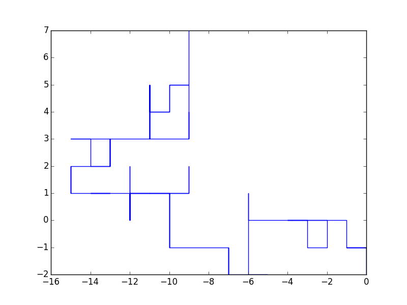
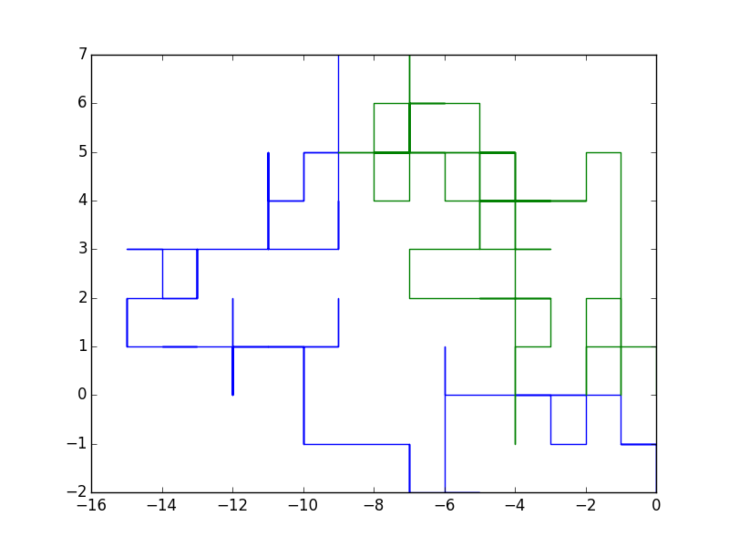

Scientific computing with Python¶
Contents
Introduce Python’s core numerical, scientific, and plotting packages.
- Fernando Pérez, Brian E. Granger, and John D. Hunter. “Python: an ecosystem for scientific computing.” Computing in Science & Engineering 13, no. 2 (2011): 13-21.
- Stéfan van der Walt, S. Chris Colbert, and Gael Varoquaux. “The NumPy array: a structure for efficient numerical computation.” Computing in Science & Engineering 13, no. 2 (2011): 22-30.
- John D. Hunter. “Matplotlib: A 2D graphics environment.” Computing in Science & Engineering 9, no. 3 (2007): 0090-95.
NumPy and matplotlib¶
Exercise: lock ’n load¶
For this exercise please work through Stéfan van der Walt’s NumPy lock ’n load.
Example: random walk¶
Here is:
import numpy as np
import matplotlib.pyplot as plt
np.random.seed(2)
code = {"up": (0,1),
"down": (0,-1),
"left": (-1,0),
"right": (1,0)}
def random_2d_walk(nsteps=100):
steps = np.random.choice(code.keys(), nsteps)
walk = np.array([code[step] for step in steps])
xy = walk.cumsum(axis=0)
return xy
xy = random_2d_walk()
plt.plot(xy[:,0], xy[:,1])
plt.savefig("rw1.png")
Here is the generated figure.

Random walk 1
And:
import numpy as np
import matplotlib.pyplot as plt
class Random2DWalk(object):
def __init__(self, start=(0,0)):
self.steps = ["start"]
self.walk = np.array([start])
self._code = {"up": (0,1),
"down": (0,-1),
"left": (-1,0),
"right": (1,0)}
def __str__(self):
current_position = self.position()[-1]
total_steps = len(self.steps) - 1
message = "After {0} steps you are at position: {1}"
return message.format(total_steps, current_position)
def step(self, nsteps=100):
steps = np.random.choice(self._code.keys(), nsteps)
walk = np.array([self._code[step] for step in steps])
self.steps += steps
self.walk = np.vstack([self.walk, walk])
return None
def position(self):
return self.walk.cumsum(axis=0)
def plot(self):
xy = self.position()
plt.plot(xy[:,0], xy[:,1])
plt.savefig("rw2.png")
return None
np.random.seed(2)
rw = Random2DWalk()
print rw
rw.step()
print rw
print rw.steps[:5]
print rw.walk[:5]
rw.plot()
Produces the following output:
After 0 steps you are at position: [0 0]
After 100 steps you are at position: [-4 4]
['start', 'up', 'left', 'down', 'up']
[[ 0 0]
[ 0 1]
[-1 0]
[ 0 -1]
[ 0 1]]
And here is the generated figure.

Random walk 2
Exercise: Sierpinski triangle¶

Sierpinski triangle generated via the “chaos game.”
Write a Python script to construct Sierpinski triangle using the following algorithm:
- Choose 3 points in the plane (forming a triangle).
- Choose another “starting” pointing (current position).
- Randomly choose one of the corners of the triangle.
- Move halfway from your current position to the selected corner.
- Plot the new current position.
- Repeat from step 3 (for 100 times).

{kind=link}
{kind=link}